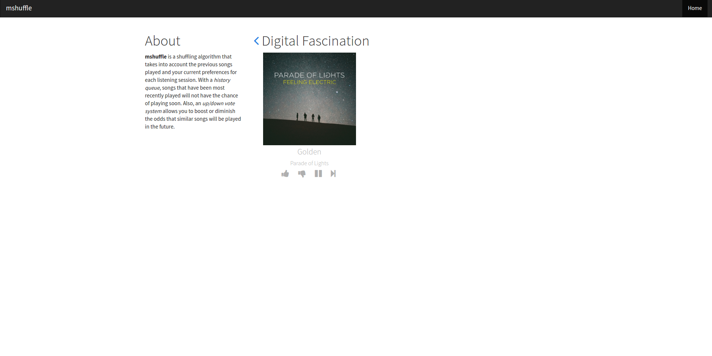
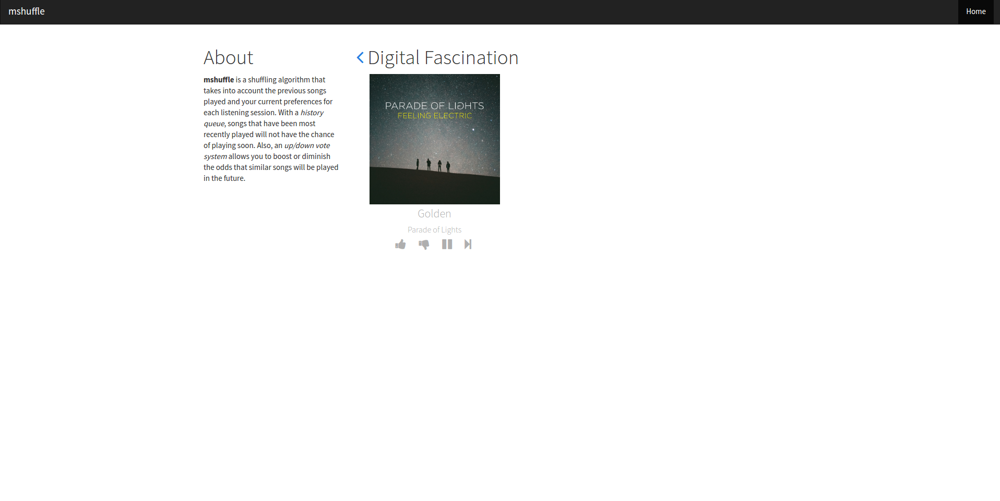
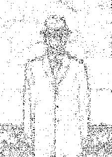
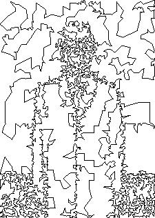
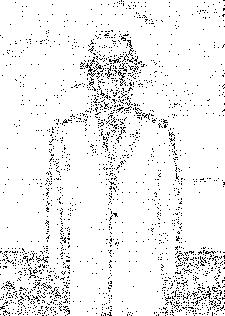
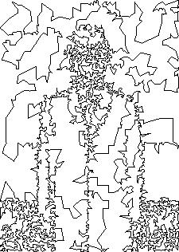

Before my last year of college, I was a
Software Engineer intern at
Microsoft Corporation on the
Bing User Location team. I designed and implemented
Bing Location History in C# as a
middle-tier and
backend solution to manage stored locations for users over time. Additionally, I participated with a few colleagues in two company hackathons. The first hackathon, I developed a prototype in
JavaScript of the
Bing Internet Connection Speed Test, which has been further developed and released by the team. During the second hackathon, I worked on the
front-end of a website called Fashion Watch to allow users to submit photos that are then ranked against the latest fashion trends.
 

 


